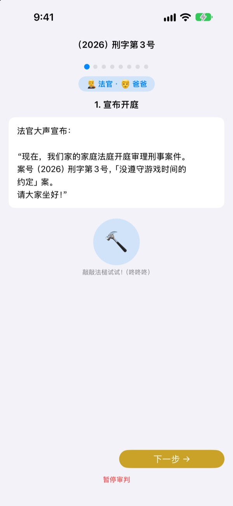
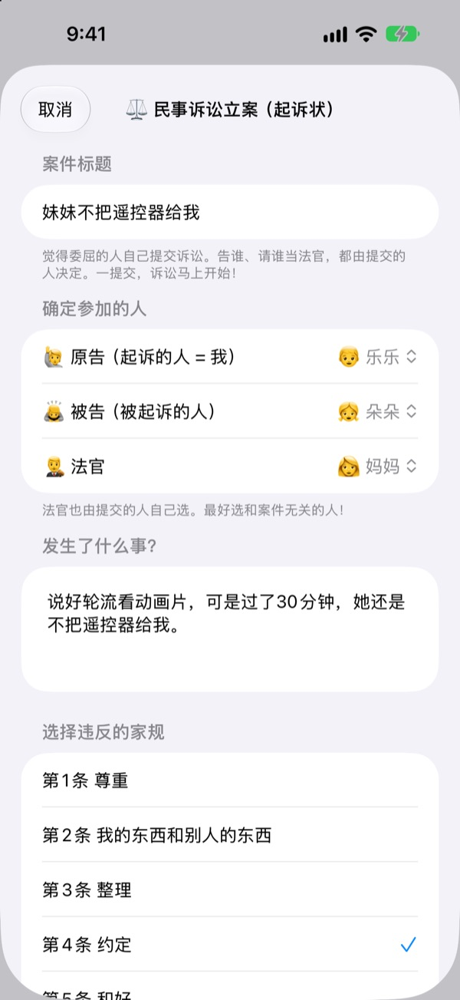
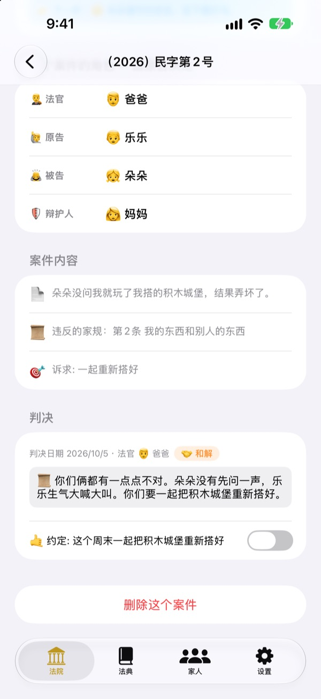
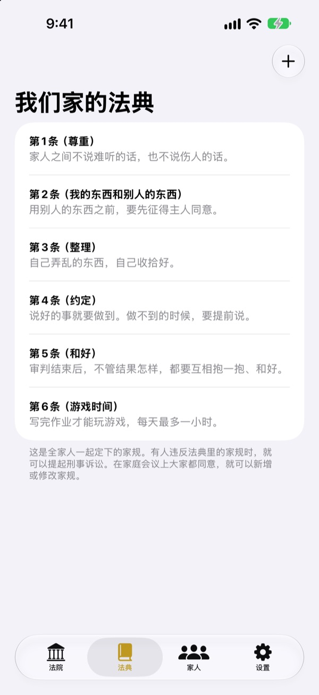

受了委屈，
别哭，开庭说清楚
孩子亲自当原告递诉状，家人分别担任法官和辩护人。每一步都有台词提示该谁说、说什么，第一次玩也能像真正的审判一样进行。
无广告、无付费、无需注册。记录只保存在这台设备上。

来开一次庭
简单审一审“弟弟不肯把遥控器给我”这件案子。在上方切换用语难度，敲敲法槌，开开计时器试试。会有声音，请留意音量。
“是他先动手的！”每次都得你来判谁对，累不累？
一吵架，最后总是大人拍板，输的那个委屈得直哭，赢的那个也不知道自己为什么赢。家庭法庭给孩子一套顺序：把自己的话说完，也把对方的话听完。判决不只是惩罚，而是以约定收尾。
受委屈的人亲自起诉
谁觉得委屈，谁就当原告递诉状。告谁、请谁当法官，也由起诉的人决定。孩子也可以告爸爸妈妈。
看到有人违反家规，还可以当检察官提起刑事诉讼。法官只能由原告和被告以外的人担任。

判决以约定收尾
宣判时一起定下要遵守的约定或惩罚，并一直勾选到做到为止。结束的案件会累积成我们家的判例。
推荐惩罚会先列出“恢复原状”“弥补心意”这类修复关系的做法，减少游戏和电视时间放在最后。

我们家的法，我们自己定
把尊重、整理、守约这些全家商量好的规矩写成条文，随时增加或修改。递诉状时，可以选出被违反的那条法。
在“了解法院”里，可以学到法官、原告、检察官、辩护人各做什么，以及审判的流程。

三步就能开始
- 1
添加家人
只要名字和一个表情符号，不需要账号。
- 2
立案
受了委屈走民事，违反家规走刑事，再选好法官。
- 3
开庭
照着台词说，用计时器控制时间，用法槌宣判。
随孩子年龄变化的用语
- 法官
- 简单: 小裁判 · 法庭用语: 审判长
- 原告
- 简单: 觉得委屈的人 · 法庭用语: 原告
- 被告
- 简单: 回答的人 · 法庭用语: 被告
- 检察官
- 简单: 告状的人 · 法庭用语: 检察官
- 被告人
- 简单: 回答的人 · 法庭用语: 被告人
- 辩护人
- 简单: 小帮手 · 法庭用语: 辩护人
- 民事
- 简单: 委屈 · 法庭用语: 民事
- 刑事
- 简单: 说话不算话 · 法庭用语: 刑事
在设置的“用语难度”里选择，画面和台词里的用语会一起改变。幼儿园的孩子可以从“简单”开始，小学生可以从“标准”开始。
常见问题
几岁可以玩？
能识字的孩子就能和爸妈一起玩。有台词和提示，再把用语难度调成“简单”，由大人念给孩子听，更小的孩子也能参与。
真的免费吗？
是的。没有广告，也没有解锁功能的付费。设置里有支持开发者的打赏，完全自愿，不会解锁或锁住任何功能。
需要联网吗？
不需要。审判和记录都能离线使用。只有在设置里发送反馈时，才需要联网并登录 iCloud。
记录保存在哪里？
家人、家规、审判和判决记录都只保存在设备里，不会发送到服务器。开发者能收到的，只有你主动发送的反馈，以及无法识别个人的匿名使用统计。
可以备份或转移到其他设备吗？
在设置里用“保存记录”导出成文件，到另一台设备上用“导入记录”打开，就能原样恢复。以前网页版导出的备份文件也能导入。
iPad 能用吗？
能。iPhone 和 iPad 都可以用，全家围着大屏幕开庭正合适。
惩罚定得太重怎么办？
在检察官提出惩罚的环节，台词会提醒“不要太重，要做得到”。推荐惩罚也会先列出恢复原状、弥补心意、换位思考这类修复关系的做法。
想彻底删除数据。
删除 App 后，设备里保存的所有记录都会一起删除。记录从未离开设备，所以不会留在别处。想删除已发送的反馈，请发邮件告诉我们。
发现问题、想到新功能或有任何想说的，请写信到 leeo@kakao.com。也可以在 App 设置里直接发送反馈。